Un ebook sobre China y Japón
Los5Elementos
Lo que China y Japón saben de vos
Madera, fuego, tierra, metal y agua: una idea de más de dos mil años para entender tu carácter, tus estaciones y tu manera de llevarte con los demás.
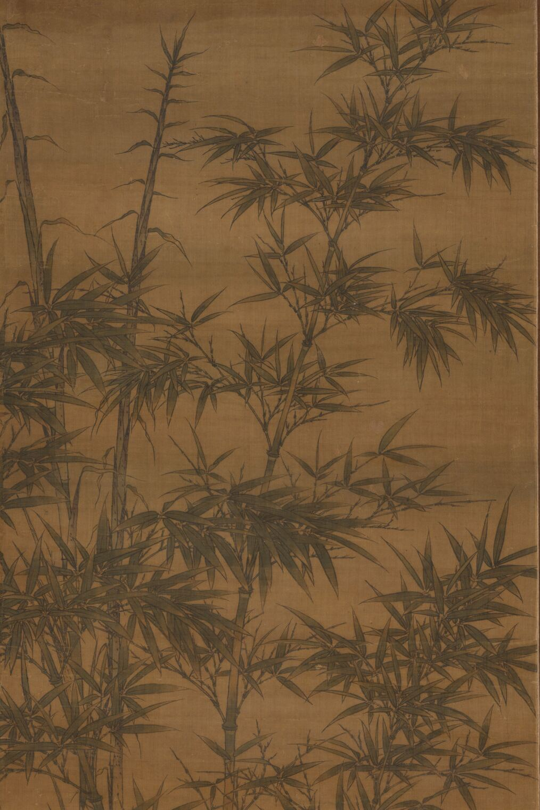
木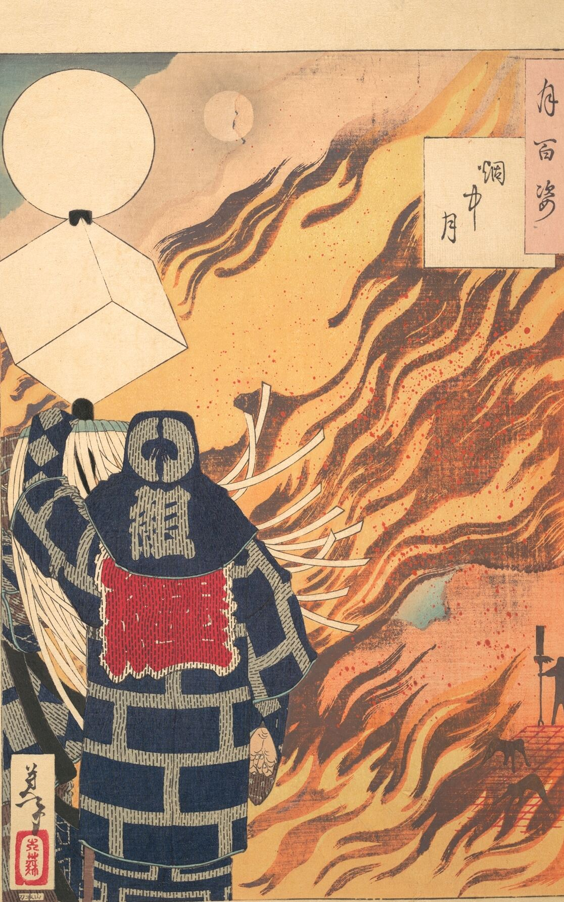
火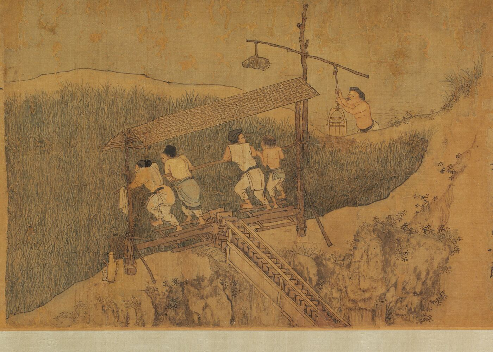
土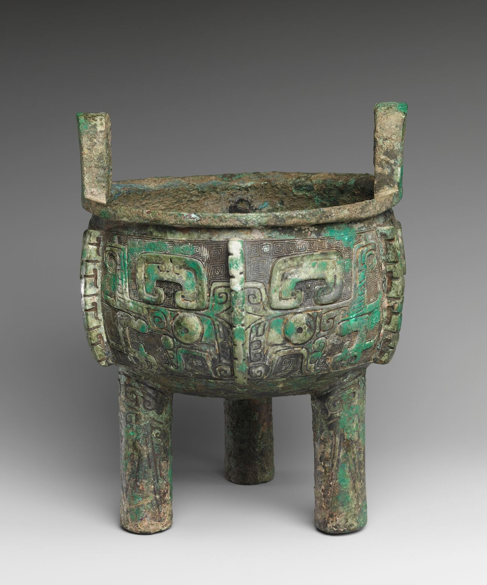
金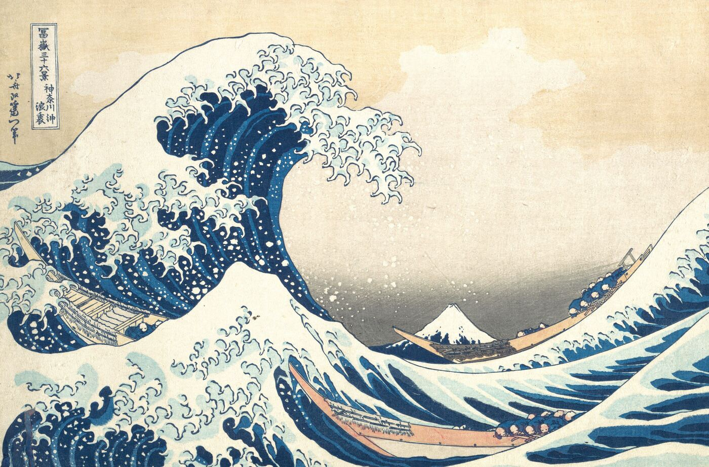
水Índice
Qué vas a encontrar
Antes de empezar
A los cuarenta, las dudas cambian
“A los cuarenta ya no tenía dudas.”Confucio, Analectas 2.4
Confucio escribió esa frase hace dos mil quinientos años. Las dudas no desaparecen a los cuarenta, pero cambian: ya sabemos bastante de la vida y empezamos a preguntarnos por qué somos como somos.
Este libro reúne dos maneras orientales de responder esa pregunta. La primera son los cinco elementos de China. La segunda es la versión que nació en Japón, con samuráis, estrellas y una forma muy especial de festejar los sesenta años. En el camino vas a encontrar cuatro historias que en China y en Japón conoce todo el mundo, y que acá casi nadie escuchó.
No hace falta creer en nada para disfrutarlo. Es historia, filosofía y un poco de juego.
Al terminar vas a saber tres cosas de vos: tu elemento, tu estrella japonesa y el año en que, según Japón, volvés a nacer.
- Deslizá hacia arriba para pasar de página, o tocá Seguir.
- El botón Índice, arriba, te lleva a cualquier capítulo.
- Hay un test y una calculadora. Tus resultados te esperan en la última página.
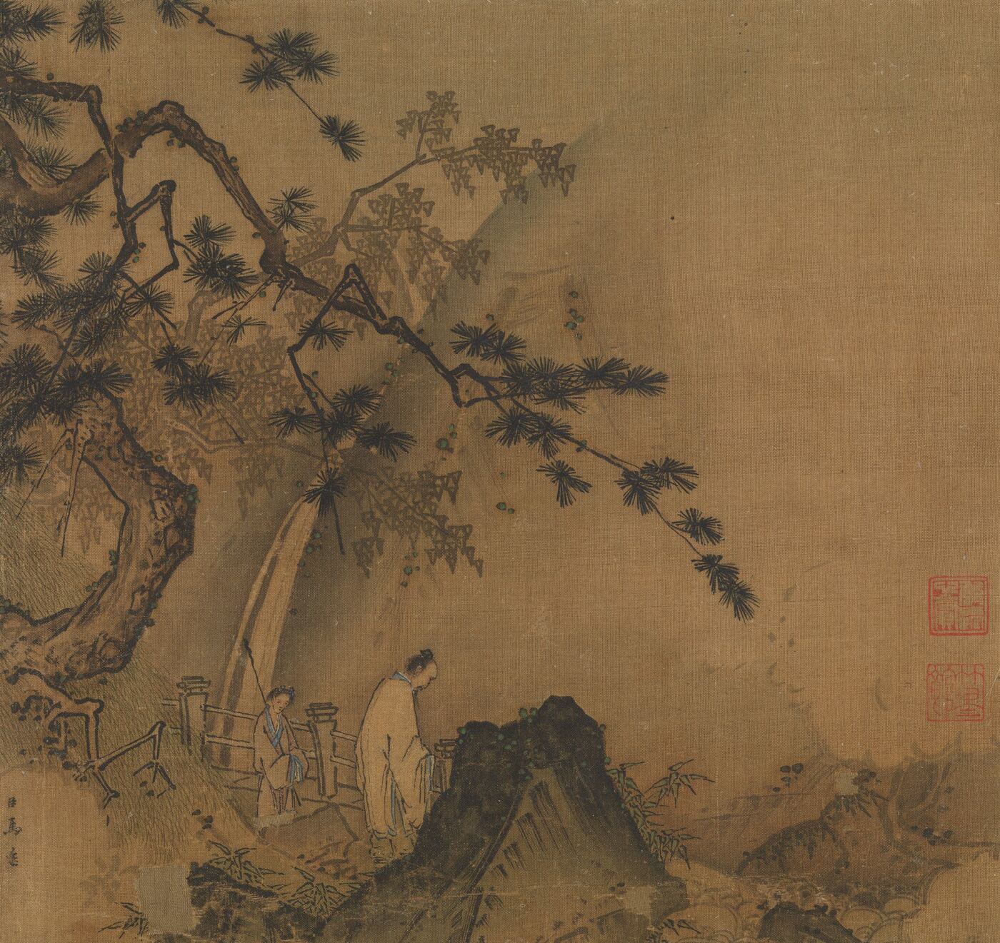
Parte 1
China
Hace más de dos mil años, los sabios chinos miraban la naturaleza para entender a las personas.
Vieron que todo lo que existe pasa por las mismas etapas que el año: nace, crece, madura, se recoge y descansa. A esas etapas les pusieron nombre de cosas que cualquiera puede ver y tocar: madera, fuego, tierra, metal y agua.
Con esa idea simple explicaron el cuerpo, las emociones, la comida, la música y hasta el carácter de cada persona.
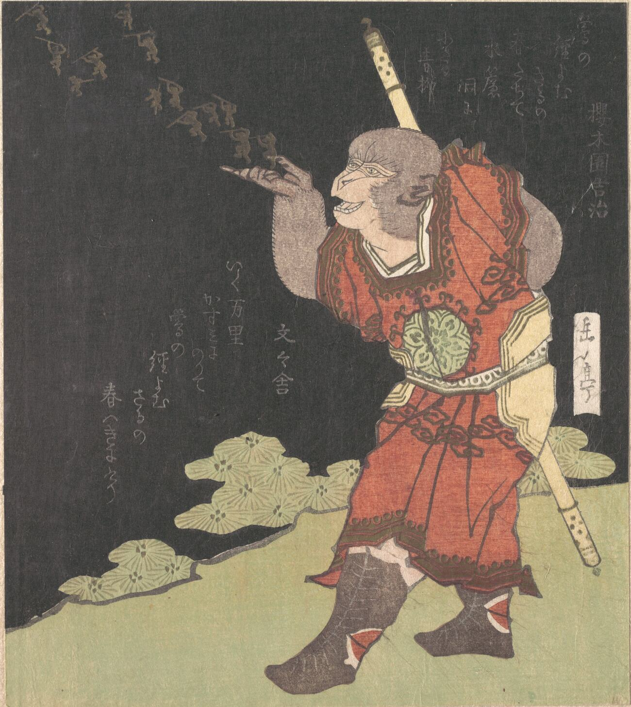
Historia de China · Viaje al Oeste
El mono que desafió al cielo
El personaje más famoso de China pasó quinientos años atrapado bajo una montaña. La montaña se llamaba Cinco Elementos.
Sun Wukong, el Rey Mono, nació de una piedra en la cima de una montaña. Aprendió setenta y dos transformaciones y podía recorrer cincuenta mil kilómetros de un solo salto, montado en una nube. Se volvió tan poderoso que se hizo llamar “Gran Sabio Igual al Cielo”.
Se comió los duraznos de la inmortalidad del jardín celestial, se tragó las píldoras de vida eterna de Laozi y derrotó a todos los ejércitos que mandaron a detenerlo. Lo encerraron cuarenta y nueve días en un horno de fuego y salió más fuerte, con los ojos de oro.
Historia de China · La apuesta
La palma de Buda
Como ningún dios podía con él, llamaron a Buda. Buda le propuso una apuesta: “Si salís de la palma de mi mano de un salto, el cielo es tuyo”.
Wukong se rió, saltó y voló hasta el fin del mundo, donde encontró cinco columnas enormes. Para dejar constancia, escribió su nombre en una y, de pura insolencia, hizo pis al pie de otra.
Volvió triunfante. Buda le mostró la mano: en uno de sus dedos estaba la firma, y todavía olía a pis de mono. Las cinco columnas eran sus cinco dedos. Nunca había salido de la palma.
Entonces Buda dio vuelta la mano y la convirtió en una montaña de cinco picos: la Montaña de los Cinco Elementos. Wukong quedó atrapado debajo quinientos años, hasta que un monje lo liberó a cambio de que lo acompañara a la India a buscar los textos sagrados. Ese viaje es la novela Viaje al Oeste, publicada en el siglo XVI.
Muchos lectores chinos ven la novela como una alegoría de los cinco elementos: Wukong sería el Metal; Zhu Bajie, el cerdo glotón que lo acompaña, la Madera; y el silencioso monje Sha, la Tierra. En Japón, Wukong se llama Son Gokū: en él se inspiró Akira Toriyama para crear a Gokú, el de Dragon Ball, con su nube voladora y su bastón que se estira.
¿Qué son esos cinco elementos que ni el Rey Mono pudo vencer? Empecemos.
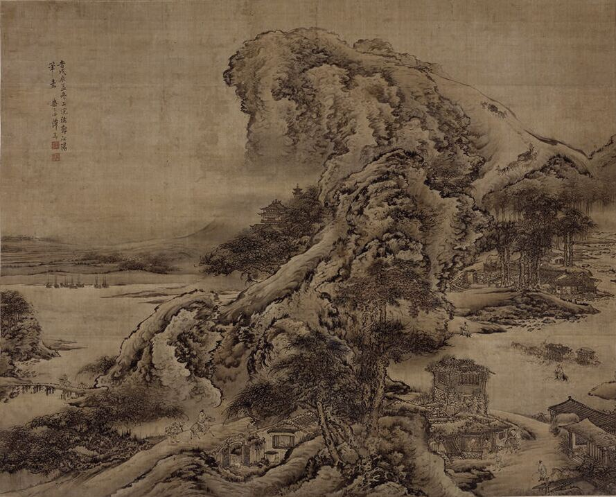
Capítulo 1
No son cosas, son movimientos
En chino se dicen wu xing (五行). Wu es cinco. Xing quiere decir “andar” o “moverse”. Por eso los especialistas lo traducen como “las cinco fases”: no hablan de materiales, sino de momentos de un ciclo.
La madera es lo que nace y crece. El fuego, lo que llega a su punto más alto. La tierra, lo que madura y sostiene. El metal, lo que se recoge y se ordena. El agua, lo que descansa y se guarda para volver a empezar.
La teoría tomó forma alrededor del siglo IV antes de Cristo y se usó para casi todo: medicina, calendario, música, arquitectura y política. Cada dinastía china decía gobernar bajo un elemento, y el siguiente emperador elegía el que “vencía” al anterior.
Capítulo 2 · 相生
El ciclo que crea
- 木 Maderaalimenta al fuego.
- 火 Fuegodeja cenizas, que se vuelven tierra.
- 土 Tierraguarda en su interior los metales.
- frío junta gotas de agua, como una copa helada.
- 水 Aguahace crecer la madera.
Los chinos lo llaman la relación de madre e hijo: cada elemento nutre al que le sigue, y el círculo nunca se corta.
Capítulo 3 · 相克
El ciclo que controla
- 木 Maderaatraviesa la tierra con sus raíces.
- 土 Tierracontiene al agua, como un dique.
- 水 Aguaapaga el fuego.
- 火 Fuegoderrite el metal.
- corta la madera, como un hacha.
Controlar no es algo malo. Sin freno, todo crecería sin límite. Un buen equilibrio necesita los dos ciclos, como una familia necesita cariño y también reglas.
Capítulo 4
El mapa de los cinco
Cada elemento tiene su estación, su color, su sabor, su emoción y su momento del día. Las estaciones están puestas como caen en Argentina.
- 木Madera
Primavera (septiembre a noviembre) · verde · ácido · enojo · la mañana
- 火Fuego
Verano (diciembre a febrero) · rojo · amargo · alegría · el mediodía
- 土Tierra
Fin del verano y cambios de estación · amarillo · dulce · preocupación · la media tarde
- 水Agua
Invierno (junio a agosto) · negro y azul oscuro · salado · miedo · la noche
En China el fuego está al sur, porque es ahí donde se ve el sol. En Argentina el sol recorre el cielo por el norte. Por eso algunos estudiosos de estas tradiciones, en este lado del mundo, ponen el fuego al norte y el agua al sur.
Capítulo 5 · Test
¿Qué elemento sos?
Ocho preguntas. Elegí la respuesta que más se parece a vos, sin pensarlo demasiado.
Un domingo libre ideal:
Sos Madera
Es un juego basado en la tradición china, no un diagnóstico. Lo normal es tener de todos los elementos, con uno o dos más fuertes.
Elemento 1 · Primavera
木Madera
La fuerza de lo que nace y empuja hacia arriba, como un brote que rompe la tierra.
La persona Madera tiene visión. Ve lo que todavía no existe y se pone a construirlo. Le gustan los comienzos, los proyectos y los desafíos, y no soporta quedarse quieta. Defiende lo que le parece justo y suele ser la primera en proponer un cambio.
Como un árbol, necesita espacio para crecer. Si la encierran o la frenan sin motivo, se impacienta.
En equilibrio
- Decidida y generosa.
- Planifica y cumple.
- Flexible, como el bambú que se dobla y no se quiebra.
Cuando se pasa
- Impaciente, se enoja fácil.
- Quiere controlar todo.
- Se pone rígida.
Madera · Su ficha
Dónde se ve la Madera
- Estación
- Primavera. En Argentina, de septiembre a noviembre.
- Color
- Verde.
- Sabor
- Ácido: limón, vinagre, pomelo.
- Emoción
- El enojo, y su lado bueno: la determinación.
- Momento del día
- La mañana.
- Medicina china
- La asocia con el hígado y la vesícula.
Con los otros elementos
- 水 Aguala nutre.
- 火 Fuegoes nutrido por ella.
- la frena.
- 土 Tierraes frenada por ella.
Lo que aconseja la tradición
- Empezar proyectos en primavera, su estación.
- Caminar entre árboles y tener plantas en casa.
- Descargar el enojo moviéndose: una caminata, la bici, el jardín.
“Lo duro y lo rígido acompañan a la muerte. Lo blando y lo flexible acompañan a la vida.”Tao Te Ching, capítulo 76
Elemento 2 · Verano
火Fuego
La energía en su punto más alto: el mediodía, el verano, la llama encendida.
La persona Fuego ilumina el lugar donde entra. Es cálida, expresiva y entusiasta, y tiene un don para conectar con la gente. Vive el presente, se ríe fuerte y contagia ganas.
El fuego necesita leña y también aire: sin descanso, se consume. Su desafío es cuidarse tanto como cuida su alegría.
En equilibrio
- Afectuosa y divertida.
- Inspira a los demás.
- Intuitiva, lee las emociones.
Cuando se pasa
- Ansiosa y acelerada.
- Dispersa, empieza mil cosas.
- Le cuesta estar sola o en silencio.
Fuego · Su ficha
Dónde se ve el Fuego
- Estación
- Verano. En Argentina, de diciembre a febrero.
- Color
- Rojo.
- Sabor
- Amargo: el café y, sí, el mate amargo.
- Emoción
- La alegría.
- Momento del día
- El mediodía.
- Medicina china
- Lo asocia con el corazón y el intestino delgado.
Con los otros elementos
- 木 Maderalo nutre.
- 土 Tierraes nutrida por él.
- 水 Agualo frena.
- es frenado por él.
Lo que aconseja la tradición
- Reuniones, música y risa: son su combustible.
- Siesta y sombra en verano, para no quemarse.
- Un rato de calma después de cada día intenso.
“¿No es una alegría tener amigos que vienen de lejos?”Confucio, Analectas 1.1
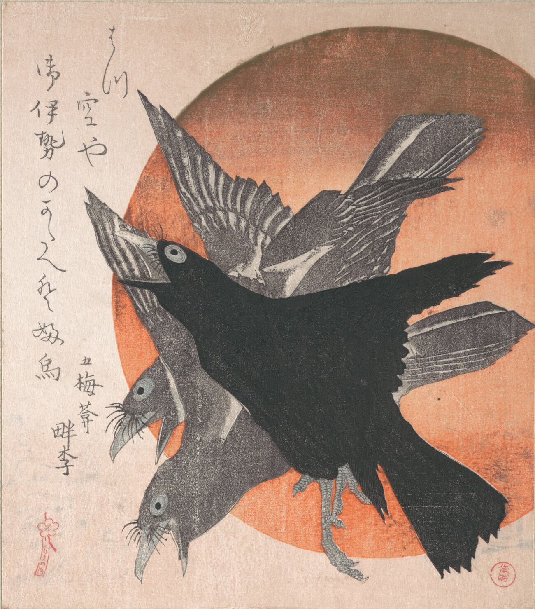
Historia de China · Fuego
El día que salieron diez soles
Al principio había diez soles. Eran hijos del dios del cielo y salían de a uno, por turno, cada mañana.
Un día se cansaron de esperar y salieron los diez juntos. Los ríos se secaron, las cosechas se quemaron y la gente se moría de calor. Era fuego sin nada que lo frenara.
El emperador llamó a Hou Yi, el mejor arquero del mundo. Hou Yi tensó su arco rojo y empezó a disparar. Cada flecha que daba en el blanco hacía caer un sol, que al tocar la tierra se convertía en un cuervo de tres patas. Derribó nueve. Dejó uno solo: el que todavía hoy nos alumbra.
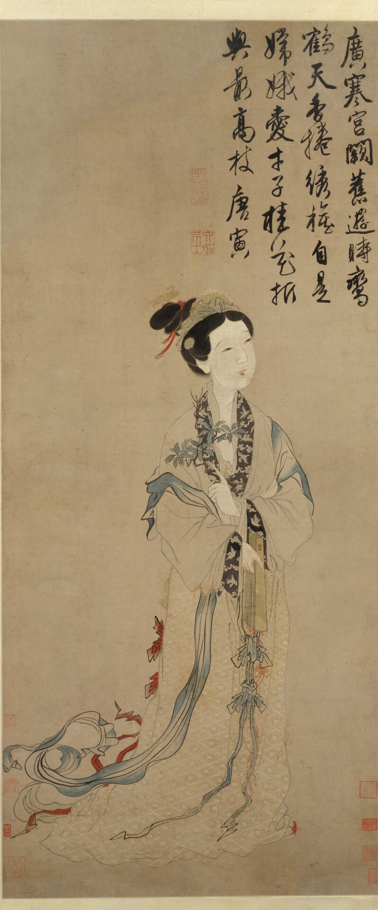
Historia de China · La luna
La mujer que se fue a la luna
Como premio, la Reina Madre del Oeste le regaló a Hou Yi un elixir de la inmortalidad. Alcanzaba para una sola persona, y él no quería vivir para siempre sin su esposa, Chang'e. Así que lo guardó.
Las versiones no coinciden en lo que pasó después. En la más contada hoy, un discípulo de Hou Yi intentó robarlo y Chang'e, para que no cayera en malas manos, se lo tomó. Su cuerpo se volvió liviano y empezó a subir hasta llegar a la luna. Desde entonces vive allí, acompañada por un conejo de jade.
Hou Yi puso en el patio las frutas y los dulces favoritos de ella, bajo la luna llena. Así nació, dice la tradición, la Fiesta del Medio Otoño: cada año, millones de familias chinas miran la luna y comen pasteles de luna pensando en los que están lejos.
Diez soles son puro Fuego sin control, y la historia enseña lo mismo que el ciclo de los elementos: nada sobrevive al exceso. La luna es lo opuesto al sol, el lado fresco y tranquilo. Hoy las misiones lunares de China se llaman Chang'e, y su robot explorador se llama Yutu, “conejo de jade”.
Elemento 3 · Fin del verano
土Tierra
El centro que sostiene: el campo maduro, la cosecha, la mesa servida.
La persona Tierra es el centro de su familia o de su grupo. Es práctica, leal y paciente. Se da cuenta de lo que le falta a cada uno y lo resuelve sin que se lo pidan. En su casa siempre hay algo para comer.
Su desafío es aprender a recibir. De tanto cuidar a los demás, a veces se olvida de sí misma.
En equilibrio
- Generosa y contenedora.
- Estable: se puede confiar en ella.
- Gran anfitriona.
Cuando se pasa
- Se preocupa de más.
- Le cuesta decir que no.
- Le da mil vueltas a las cosas.
Tierra · Su ficha
Dónde se ve la Tierra
- Estación
- El final del verano (en Argentina, febrero y marzo) y los días de cambio entre una estación y otra.
- Color
- Amarillo y tonos tierra.
- Sabor
- Dulce: un buen dulce de leche.
- Emoción
- La preocupación, y su lado bueno: la empatía.
- Momento del día
- La media tarde.
- Medicina china
- La asocia con el estómago y el bazo.
Con los otros elementos
- 火 Fuegola nutre.
- es nutrido por ella.
- 木 Maderala frena.
- 水 Aguaes frenada por ella.
Lo que aconseja la tradición
- Comer a horario, sentada y sin apuro.
- Comida casera y tibia.
- Dejarse cuidar de vez en cuando.
“Un viaje de mil li empieza bajo tus pies.”Tao Te Ching, capítulo 64 · un li es una medida china de unos 500 metros
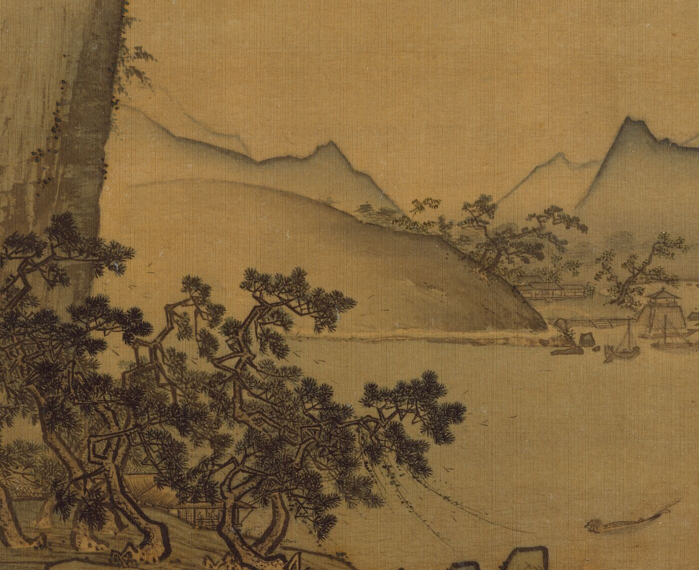
Elemento 5 · Invierno
水Agua
La quietud profunda: el invierno, la noche, la semilla que espera bajo la tierra.
La persona Agua es profunda y reflexiva. Observa antes de hablar, tiene buena intuición y una sabiduría tranquila. Es independiente y persistente, como el agua que gota a gota horada la piedra.
Necesita tiempo a solas para recargarse. Su desafío es no aislarse ni dejar que el miedo le gane.
En equilibrio
- Serena y sabia.
- Curiosa: quiere entender a fondo.
- Valiente cuando hace falta.
Cuando se pasa
- Miedosa o desconfiada.
- Se aísla.
- Le cuesta arrancar.
Agua · Su ficha
Dónde se ve el Agua
- Estación
- Invierno. En Argentina, de junio a agosto.
- Color
- Negro y azul oscuro.
- Sabor
- Salado: queso, aceitunas, salame.
- Emoción
- El miedo, y su lado bueno: la prudencia.
- Momento del día
- La noche.
- Medicina china
- La asocia con los riñones y la vejiga.
Con los otros elementos
- la nutre.
- 木 Maderaes nutrida por ella.
- 土 Tierrala frena.
- 火 Fuegoes frenado por ella.
Lo que aconseja la tradición
- Dormir más en invierno, su estación.
- Sopas, caldos y comidas calientes.
- Silencio, lectura y tiempo propio.
“Nada en el mundo es más blando y débil que el agua. Pero para vencer a lo duro y lo fuerte, nada la supera.”Tao Te Ching, capítulo 78
Capítulo 6
Cómo te llevás con los demás
Elegí tu elemento y el de otra persona: tu pareja, tu hija, tu jefe, tu amiga. Los dos ciclos explican por qué con algunos fluye todo y con otros saltan chispas.
Te nutre
Esa persona te da energía
Su Agua alimenta tu Madera, como el agua que riega un árbol. Es alguien que te recarga y te ayuda a crecer. Devolvele el cariño a tu manera.
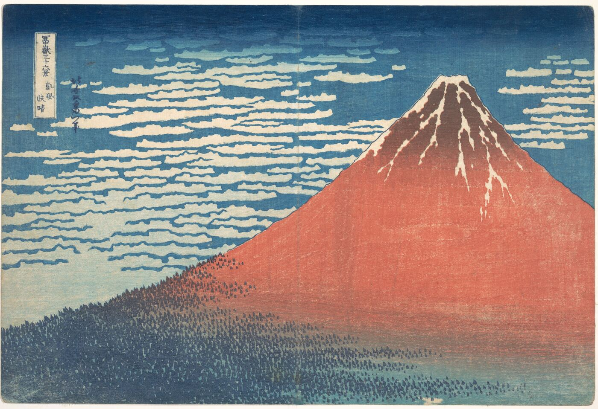
Parte 2
Japón
Los cinco elementos cruzaron el mar hace más de mil cuatrocientos años.
En Japón se mezclaron con el budismo y con la cultura local, y dieron algo propio: otros cinco elementos, un samurái que escribió un libro con ellos, una astrología de nueve estrellas y una manera muy especial de festejar los sesenta años.
Capítulo 7
Cómo llegaron a Japón
En el año 602, un monje del reino coreano de Baekje llamado Kanroku llegó a Japón con libros chinos de calendario, astronomía y adivinación. Poco después, la corte creó una oficina dedicada al yin y el yang y a los cinco elementos.
Sus especialistas, los onmyōji, elegían fechas, interpretaban señales y orientaban los edificios. El más famoso fue Abe no Seimei (921–1005). Su símbolo era una estrella de cinco puntas, una por elemento, que todavía se ve en el santuario que lleva su nombre, en Kioto.
Los elementos también quedaron en el calendario. En japonés, cinco días de la semana llevan su nombre:
No es casualidad. En español, martes viene de Marte, miércoles de Mercurio, jueves de Júpiter y viernes de Venus. En japonés esos planetas se llaman “estrella de fuego”, “estrella de agua”, “estrella de madera” y “estrella de metal”. Saturno es la “estrella de tierra”.
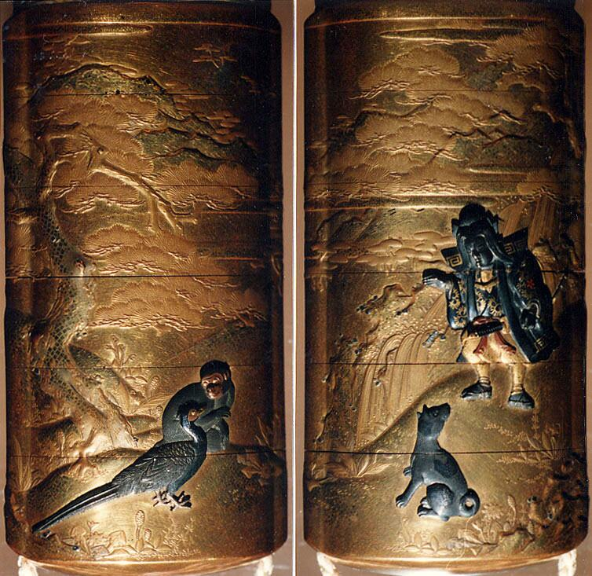
Historia de Japón
El niño que nació de un durazno
Es el cuento que todos los chicos japoneses saben de memoria.
Una anciana lavaba ropa en el río cuando vio bajar, flotando, un durazno enorme. Se lo llevó a casa para comerlo con su marido, pero al abrirlo encontraron adentro a un bebé. No tenían hijos, así que lo criaron y lo llamaron Momotarō, “el niño del durazno”.
Ya grande, Momotarō decidió ir a la Isla de los Demonios, donde vivían los oni que saqueaban los pueblos. La anciana le preparó unas bolitas de mijo para el viaje. En el camino se le acercaron un perro, un mono y un faisán; cada uno recibió una bolita y se sumó a la aventura.
Los cuatro cruzaron el mar, vencieron a los oni y volvieron con sus tesoros. Momotarō cuidó a sus padres por el resto de sus vidas.
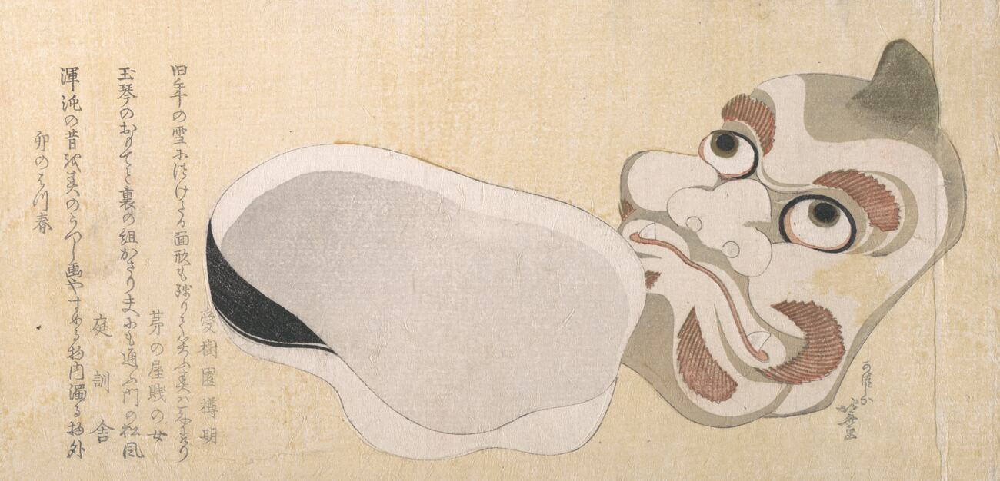
Lo que esconde el cuento
El código secreto de Momotarō
¿Por qué justo un perro, un mono y un faisán? El cuento no lo dice, pero en Japón circula desde hace siglos una explicación que sale del mismo sistema de los onmyōji.
Para ellos, el noreste es la dirección peligrosa: la “puerta de los demonios”. En la brújula de los doce animales, el noreste es la dirección del buey y del tigre. Por eso los oni se dibujan con cuernos de buey y taparrabos de piel de tigre.
Del otro lado de la brújula, uno detrás del otro, están el mono, el gallo y el perro. Son los compañeros de Momotarō: el faisán ocupa el lugar del gallo. Su equipo es el antídoto contra los demonios.
Tampoco es casualidad. En la tradición china, la madera de durazno espanta a los malos espíritus. Y en el mito japonés más antiguo, el dios Izanagi escapa del mundo de los muertos tirándoles duraznos a quienes lo persiguen.
Capítulo 8 · 五大
Japón tiene sus propios cinco elementos
Además de los cinco chinos, Japón adoptó otros cinco que llegaron con el budismo desde la India. Se llaman Godai, “los cinco grandes”: tierra, agua, fuego, viento y vacío.
Desaparecen la madera y el metal y aparecen dos elementos nuevos: el viento, que es lo que se mueve, y el vacío, que es lo que no se ve.
| Aspecto | China · Wu Xing | Japón · Godai |
|---|---|---|
| Los cinco | Madera, fuego, tierra, metal, agua | Tierra, agua, fuego, viento, vacío |
| Qué explican | Cómo cambian las cosas: fases de un ciclo | De qué está hecho todo: estados de la materia |
| De dónde vienen | Filosofía china | Budismo de la India, llegado a través de China |
| Dónde se usan | Medicina, calendario, astrología | Templos, arte marcial, arquitectura |
Lo difundió sobre todo el budismo esotérico, que el monje Kūkai trajo de China en el año 806.
Capítulo 9 · 五輪塔
La torre de los cinco anillos
En los templos y cementerios de Japón hay unas torres de piedra llamadas gorintō, “torre de los cinco anillos”. Tienen cinco piezas apiladas, y cada pieza es un elemento del Godai.
Abajo va la tierra, que sostiene. Arriba, el vacío, que todo lo contiene. La idea es que el cuerpo vuelve a los elementos de los que vino.
Muchas tienen talladas cinco sílabas sagradas en sánscrito, una en cada piedra. Se hacen así desde hace unos ochocientos años.
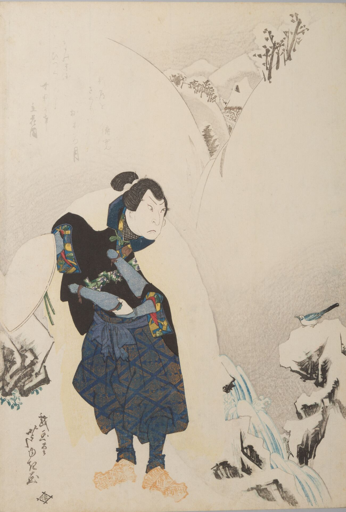
Capítulo 10
El samurái de los cinco libros
Miyamoto Musashi (hacia 1584–1645) es el espadachín más famoso de Japón. Según él mismo contó, peleó más de sesenta duelos y nunca perdió.
Cerca de los sesenta años se retiró a una cueva cerca de Kumamoto y escribió el Libro de los Cinco Anillos. Lo terminó en 1645, pocas semanas antes de morir, y lo dividió en cinco rollos, uno por cada elemento del Godai.
Hoy lo leen empresarios, deportistas y entrenadores de todo el mundo, porque sus lecciones sirven mucho más allá de la espada. Las próximas cinco páginas recorren un rollo cada una.
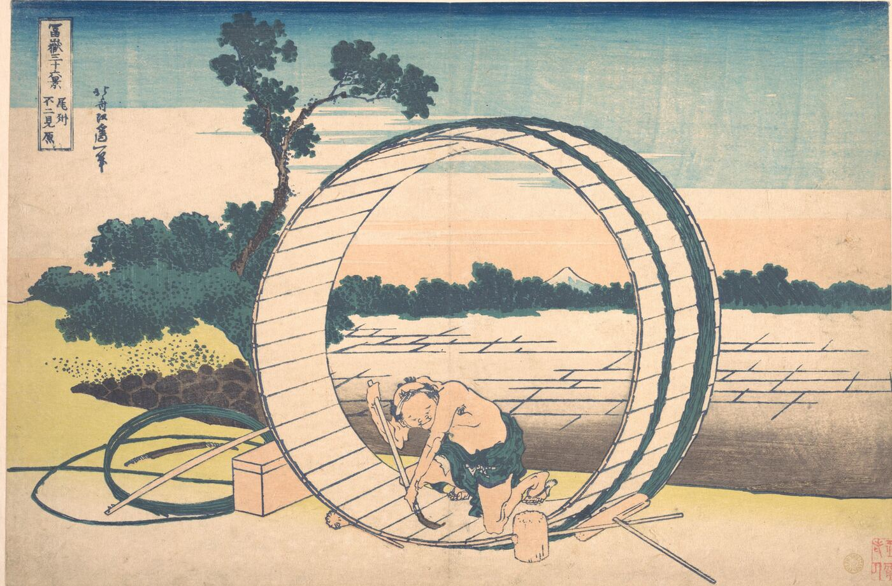
Godai 1 · 地 Chi
El libro de la Tierra
Lo sólido: las piedras, las montañas, los huesos. Es la estabilidad y la resistencia al cambio.
Musashi empieza por las bases. Compara al buen guerrero con un maestro carpintero, que conoce cada madera, sabe dónde va cada pieza y elige bien a su gente.
Para la vidaAntes de cualquier cambio, conocé bien tu terreno: tus fuerzas, tus límites y con quién contás.
Godai 2 · 水 Sui
El libro del Agua
Lo fluido: los ríos, la sangre, las emociones. Es la capacidad de adaptarse.
Musashi pide que el espíritu sea como el agua, que toma la forma del recipiente: a veces es una gota y a veces un mar embravecido. En este rollo explica la postura, la mirada y la calma interior.
Hokusai grabó esta ola con más de setenta años. Según él mismo escribió, nada de lo que había hecho antes de los setenta valía la pena.
Para la vidaSer flexible no es ser débil. Es la forma más inteligente de la fuerza.
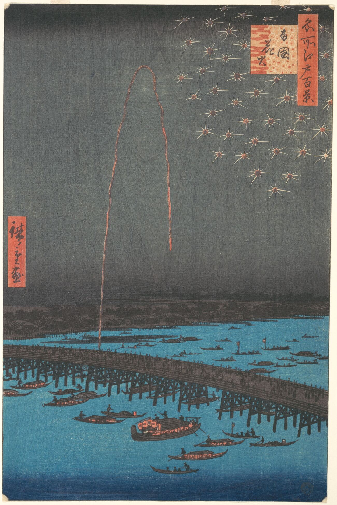
Godai 3 · 火 Ka
El libro del Fuego
Lo que da calor y energía: la pasión, el impulso, el deseo.
Es el rollo del combate en sí. Habla de la iniciativa, de leer el momento justo y de actuar con decisión cuando llega. Musashi insiste en tomar la delantera en lugar de esperar.
Para la vidaHay un tiempo para pensar y otro para hacer. El fuego enseña a reconocer el segundo.
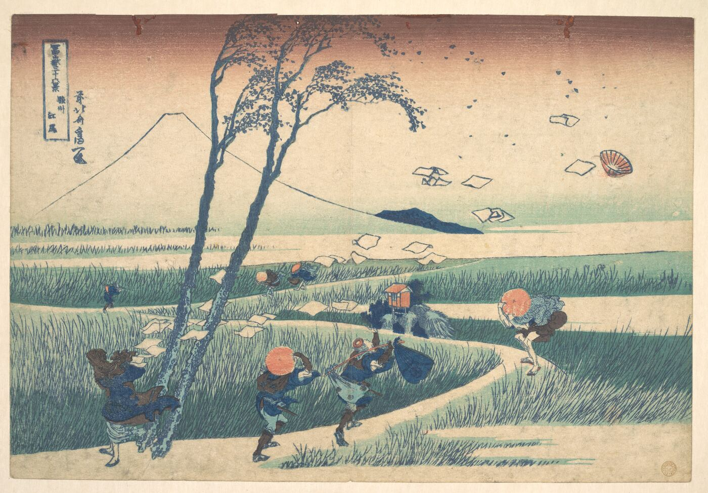
Godai 4 · 風 Fū
El libro del Viento
Lo que se mueve y crece: el aire, la respiración, la mente abierta. Es la libertad.
En japonés, fū también quiere decir “estilo”. En este rollo Musashi estudia las otras escuelas de esgrima: qué hacen bien y en qué se equivocan.
Para la vidaEntender cómo piensan los demás te hace más sabio, y no menos fiel a vos.
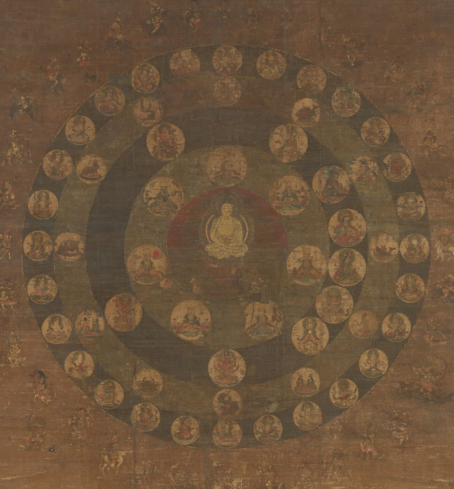
Capítulo 11 · 九星気学
Las Nueve Estrellas
El Kyūsei Kigaku es una astrología japonesa basada en los cinco elementos. En Japón es muy popular: se consulta para elegir la fecha de una mudanza, un viaje o un casamiento. Fuera de Asia casi nadie la conoce.
Cada año tiene una estrella, del 1 al 9, y cada estrella pertenece a un elemento. La tuya es la del año en que naciste. El año cuenta desde el 4 de febrero, aproximadamente, y no desde el 1 de enero.
Todo sale de este cuadrado chino, el Lo Shu. Cuenta la leyenda que apareció dibujado en el caparazón de una tortuga que salió del río Lo. Sumá cualquier fila, columna o diagonal: siempre da 15.
Calculadora
Calculá tu estrella
Poné tu año de nacimiento. Además de tu estrella, vas a ver tu año en el calendario chino y en qué año te toca el kanreki, el gran cumpleaños japonés de los sesenta.
Las estrellas 1 a 5
Las nueve, una por una
- 1Agua Blanca 一白水星 · Ippaku Suisei
Adaptable y diplomática. Fluye con las situaciones, escucha mucho y guarda secretos. Le cuesta mostrar lo que siente.
- 2Tierra Negra 二黒土星 · Jikoku Dosei
Servicial, paciente y trabajadora. Es el sostén silencioso de la familia o del equipo. Le cuesta tomar la iniciativa.
- 3Madera Jade 三碧木星 · Sanpeki Mokusei
Enérgica, directa y joven de espíritu, como el trueno de primavera. Arranca proyectos con entusiasmo. Puede ser impulsiva.
- 4Madera Verde 四緑木星 · Shiroku Mokusei
Amable, sociable y flexible, como el viento. Une a la gente y se adapta a todo. A veces le cuesta decidirse.
- 5Tierra Amarilla 五黄土星 · Goō Dosei
Ocupa el centro del cuadrado y es la más fuerte de las nueve. Magnética, con mucha voluntad y madera de líder. Puede ser terca.
Las estrellas 6 a 9
Y las cuatro que faltan
- 8Tierra Blanca 八白土星 · Happaku Dosei
Perseverante, ahorrativa y reservada, como una montaña. Construye de a poco y no abandona. Puede ser testaruda.
- 9Fuego Púrpura 九紫火星 · Kyūshi Kasei
Brillante, intuitiva y elegante. Le gusta destacarse y tiene buen ojo para la belleza. Su ánimo sube y baja rápido.
Tu estrella puede no coincidir con el elemento que te dio el test. Es normal: el test mide tu carácter de hoy y la estrella habla del año en que naciste. Juntos dicen más que cada uno por separado.
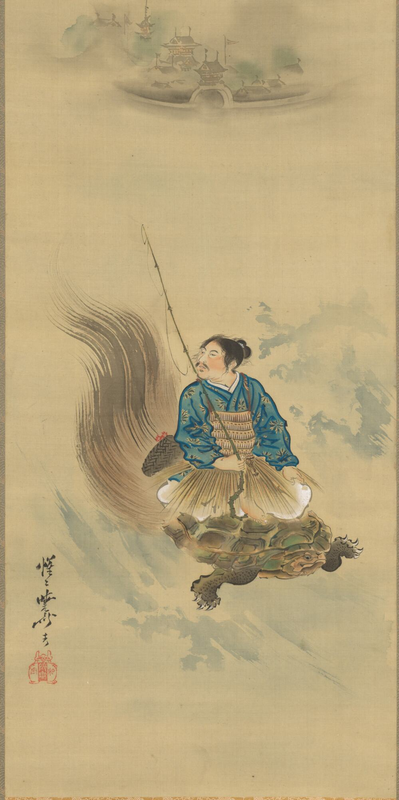
Historia de Japón · Agua
El pescador que volvió trescientos años después
Es uno de los cuentos más antiguos de Japón: ya aparece en una crónica del año 720.
Urashima Tarō era un joven pescador. Un día vio a unos chicos que maltrataban a una tortuga en la playa, los echó y devolvió la tortuga al mar.
Al día siguiente, la tortuga volvió a buscarlo. Para agradecerle, lo llevó en su caparazón hasta el fondo del océano, al Palacio del Dragón, donde lo recibió la princesa Otohime. Había banquetes, música y peces que bailaban, y por cada ventana del palacio se veía una estación distinta del año.
A Urashima le pareció que habían pasado apenas tres días. Entonces se acordó de su madre y quiso volver.
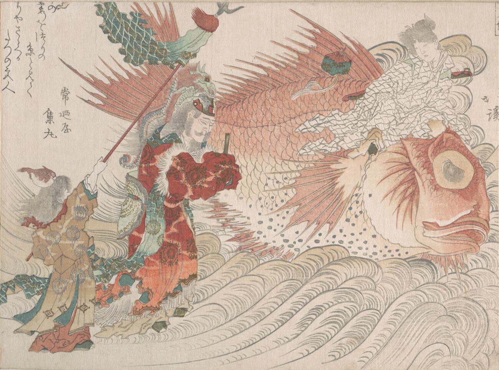
Historia de Japón · La caja
Lo que había en la caja
Antes de despedirlo, Otohime le regaló una cajita laqueada y le pidió una sola cosa: que no la abriera nunca.
Cuando llegó a su playa, nada era igual. No reconocía las casas ni a la gente. Preguntó por su familia y un anciano le contestó que había oído hablar de un tal Urashima que se había perdido en el mar… hacía trescientos años.
Solo y sin nadie, Urashima abrió la caja. Salió un humo blanco y en un instante su pelo se volvió blanco, su cara se llenó de arrugas y se convirtió en un anciano. La caja guardaba sus años.
En algunas versiones, Urashima se transforma en grulla y vuela hacia el mar, donde lo espera Otohime convertida en tortuga. Por eso, en Japón, la grulla y la tortuga son los símbolos de una vida larga.
La tortuga es el animal del Agua: en la tradición china, la Tortuga Negra cuida el norte y el invierno. Y la historia habla del tiempo, el que pasa sin que nos demos cuenta y el que ninguna caja puede guardar.
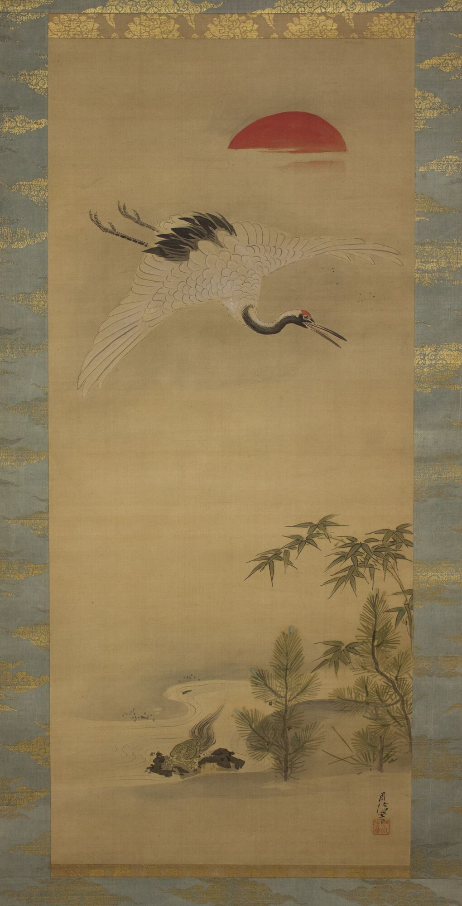
Capítulo 12 · 還暦
Kanreki: a los 60 se vuelve a nacer
En el calendario chino, cada año combina un elemento, en su versión yin o yang, con uno de los doce animales. Como son diez combinaciones de elementos y doce animales, la misma pareja se repite recién a los sesenta años.
Por eso en Japón, al cumplir sesenta, el calendario “vuelve” (kan) al año en que naciste (reki). Es como nacer de nuevo. La familia le regala a quien cumple un chaleco rojo, y a veces también un gorro. El rojo es el color de los bebés: en japonés, bebé se dice akachan, “el rojito”.
Una vieja superstición decía que las mujeres nacidas en un año de Caballo de Fuego traerían mala suerte a sus maridos. En 1966 nacieron en Japón un 25% menos de bebés que el año anterior. En 2026 volvió el Caballo de Fuego, y los nacidos en el 66 celebraron su kanreki justo en su año.
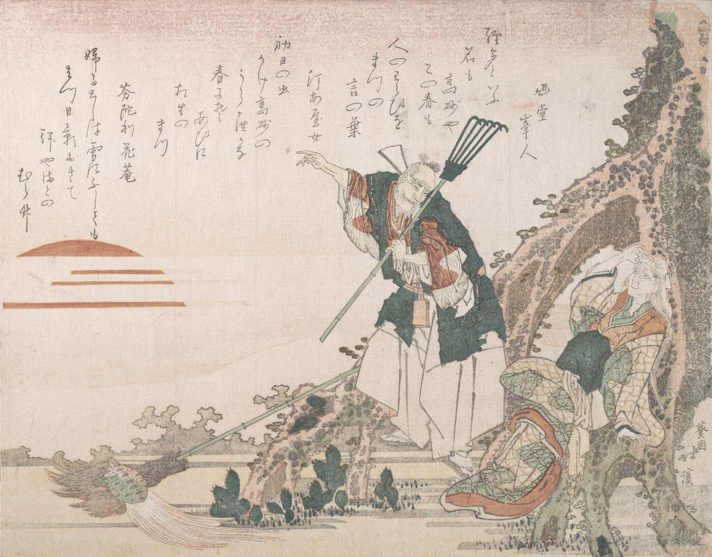
Capítulo 13
Los cumpleaños de la longevidad
Después de los sesenta, Japón festeja otros cumpleaños especiales. Casi todos esconden un juego con la escritura:
- 70古希
Koki, “lo raro desde la antigüedad”. Viene de un poema chino del siglo VIII: llegar a los setenta era muy raro.
- 77喜寿
Kiju, “alegría”. El carácter 喜, escrito a mano, se parece a 七十七, setenta y siete.
- 80傘寿
Sanju, “paraguas”. La forma abreviada de 傘 parece 八十, ochenta.
- 88米寿
Beiju, “arroz”. El carácter 米 se puede desarmar en 八十八, ochenta y ocho.
- 99白寿
Hakuju, “blanco”. Si al carácter de cien (百) le sacás el uno (一), queda blanco (白): cien menos uno.
Japón tiene hoy casi cien mil personas de más de cien años.
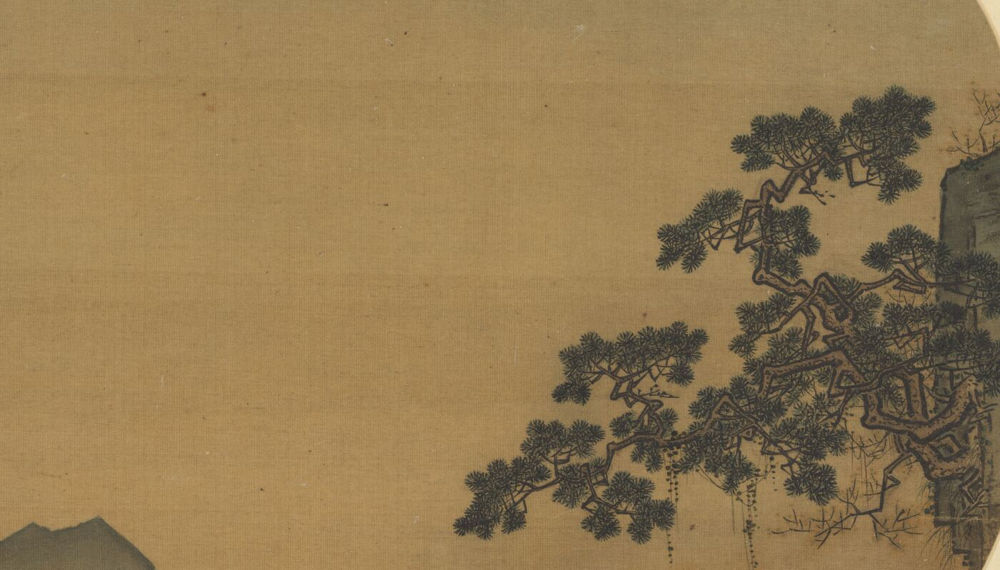
Cierre
Tu ficha
- Tu elemento
- Todavía no hiciste el test.
- Tu estrella
- Todavía no usaste la calculadora.
- Año chino
- Sale de la calculadora.
- Tu kanreki
- Sale de la calculadora.
Tu carta
Los cinco elementos no son un destino, son un mapa. Sirven para entender por qué una estación te sienta mejor que otra, por qué con algunas personas todo fluye y por qué a veces hace falta un poco de freno.
Y recuerdan algo que en Oriente saben hace siglos: todo ciclo termina para volver a empezar, como la primavera después del invierno.
Créditos
Imágenes y fuentes
Todas las imágenes son obras de dominio público de la colección abierta del Museo Metropolitano de Arte de Nueva York (The Met).
- Ma Yuan, Sabio contemplando una cascada, China, siglo XIII.
- Tan Song, Paisaje al estilo de Guo Xi, China, 1748.
- Li Kan, Bambú y rocas, China, 1318.
- Tsukioka Yoshitoshi, La luna entre las llamas, serie Cien aspectos de la luna, Japón, 1886.
- Artista desconocido, El cultivo del arroz: siembra y cosecha, China, antes de 1353.
- Caldero ritual de tres patas (ding), China, siglos XII a XI a. C.
- Artista desconocido, Barcas amarradas bajo el viento y la lluvia, China, siglo XIII.
- Katsushika Hokusai, Viento del sur, cielo despejado (Fuji rojo); Fujimigahara, en la provincia de Owari; La gran ola de Kanagawa; Ejiri, en la provincia de Suruga. Serie Treinta y seis vistas del monte Fuji, Japón, hacia 1830–1832.
- Gigadō Ashiyuki, El actor Arashi Rikan II como Miyamoto Musashi, Japón, 1832.
- Utagawa Hiroshige, Fuegos artificiales en el puente Ryōgoku, serie Cien famosas vistas de Edo, Japón, 1858.
- Jifei Ruyi (Sokuhi Nyoitsu), Leyendo un sutra a la luz de la luna, Japón, después de 1661.
- Artista desconocido, Mandala de las estrellas, Japón, siglos XIII a XIV.
- Kano Chikanobu, Grulla, tortuga, pino y bambú bajo el sol naciente, Japón, siglos XVII a XVIII.
- Totoya Hokkei, Jō y Uba de Takasago mirando el sol naciente, Japón, siglo XIX.
- Artista desconocido, Paisaje de principios de primavera, China, siglo XIII.
- Yashima Gakutei, El Rey Mono Son Gokū, de la novela china Viaje al Oeste, Japón, hacia 1824.
- Totoya Hokkei, Tres cuervos frente al sol naciente, Japón, hacia 1815; Urashima Tarō vuelve a casa sobre un pez, despedido por el Rey del Mar, Japón, siglo XIX.
- Artista desconocido, La diosa de la luna Chang'e, China.
- Kogyoku Tokayo, caja de laca (inrō) con Momotarō, el perro, el mono y el faisán, Japón, siglo XIX.
- Katsushika Hokusai, Máscaras de un oni y de la diosa Uzume, Japón, hacia 1807.
- Kawanabe Kyōsai, Urashima Tarō sobre una tortuga, Japón, después de 1888.
Textos citados: Tao Te Ching (capítulos 64, 76 y 78); Confucio, Analectas (1.1, 2.4 y 2.17); Miyamoto Musashi, Libro de los Cinco Anillos (1645).
Este libro es de divulgación cultural y entretenimiento. Las asociaciones de la medicina tradicional china y de la astrología no reemplazan la consulta con un profesional de la salud.